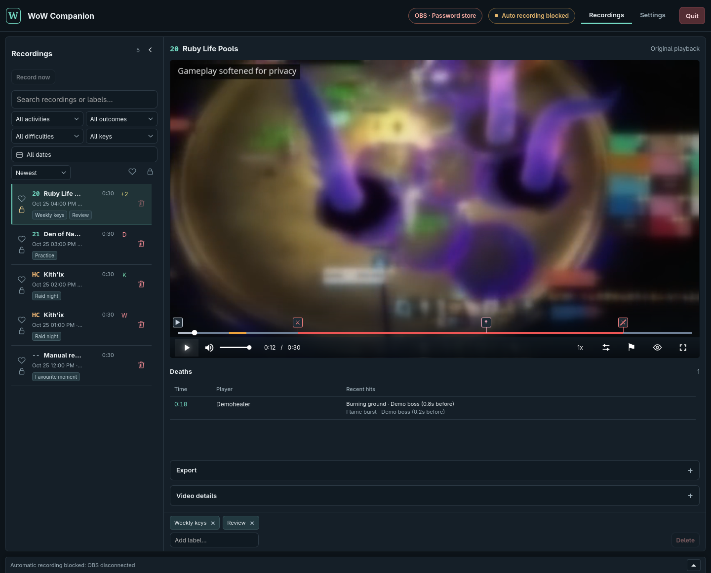
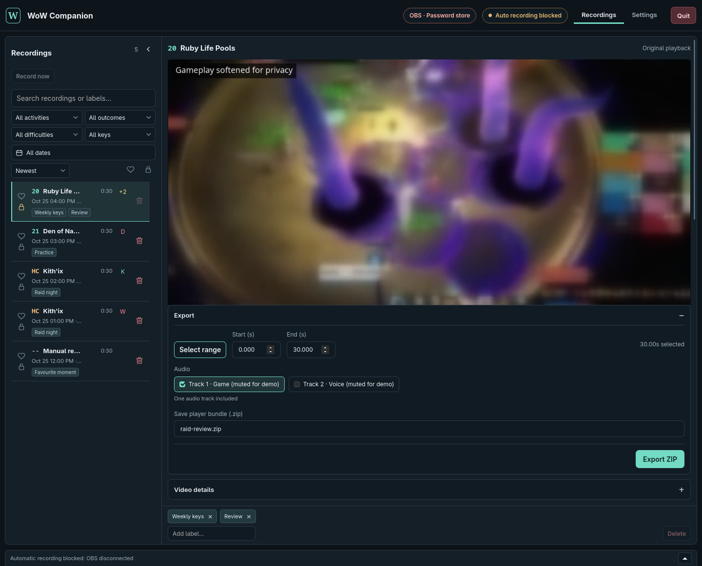

Play your game
Supported combat-log encounters start recording automatically when OBS is connected. Overlapping pulls stay covered. Manual recording is there for everything else.
Your keys, boss pulls and clutch moments, ready to review. Let OBS capture your game. Let WoW Companion keep the encounters organised.
Windows & Linux testing preview. OBS and FFmpeg required.

LESS SCRUBBING. MORE UNDERSTANDING.
Go straight from “what happened?” to the part of the recording you need.
Supported combat-log encounters start recording automatically when OBS is connected. Overlapping pulls stay covered. Manual recording is there for everything else.
Click a death to jump five seconds before it. Boss and combat markers guide you along the timeline. Slow down, seek precisely, or watch fullscreen.
Find runs by key level, difficulty, date or label. Favourite memorable pulls and protect videos you want to keep from automatic cleanup.
A LOOK INSIDE
A short screen recording of the real player, using real gameplay cropped and softened for privacy, with fictional library entries and demonstration markers.
Silent demo: playback, timeline seeking and switching to half speed. Gameplay is muted and softened to obscure identifying details. Library entries and markers are demonstration data.
BRING THE REPLAY
Select a range and choose the audio tracks to include. Export a ZIP with the video, markers and a small web player, ready to send to your group or host yourself.
No companion account or hosted video service required. Your recordings stay on your machine until you share them.
How player bundles work →
YOUR FIRST RECORDING
This is a development preview, not a finished release. Start with a short test recording before using it for raid night.
Install OBS Studio and FFmpeg (including ffprobe). Set up your game picture and sound in OBS. Already have a working scene? Keep using it.
OBS setup guide →Launch the app and follow guided setup. Enable OBS WebSocket under Tools, enter its password, then select your WoW installation. Multiple installs are supported.
Quick start →Enter /combatlog in WoW, or use your preferred logging addon. With Auto recording on and OBS connected, your next supported encounter triggers recording.
Download a preview package for Windows or Linux. Extract it and follow the quick start. OBS and FFmpeg are separate installs; this is not a stable release.
BEFORE YOU QUEUE
No. OBS handles your capture, scenes, microphone, game sound and encoding. Companion listens to WoW’s combat log and turns your recordings into an organised review library.
Companion does not stop your stream. If OBS is already recording, it observes that recording and waits for the file to close. It only stops recordings it owns. Streaming performance and compatibility are still being tested.
Only when earlier footage already exists in retained recording files. Starting OBS at the pull cannot recover footage from before recording began.
The first-release scope includes raids, Mythic+, arenas, Solo Shuffle, battlegrounds and Classic coverage. Validation varies by game version and mode. Check the compatibility matrix before relying on a particular mode.
Companion stops capture it owns, saves unfinished work and closes. Automatic clip processing can resume next launch. A recording you started in OBS stays yours. Sharing exports can be retried.
Yes. Send a test report with your OS, OBS version and what you expected to happen. Remove passwords, private paths and personal information from anything you attach.